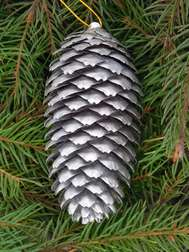

Энциклопедия
Ёлочные игрушки:
история возни кновения и тренды 2015 года
- Глава 1. Подзаголовок
- Глава 2. Подзаголовок
- Глава 3. Подзаголовок
- Глава 4. Подзаголовок
Глава 3. Подзаголовок
Наверняка большинство наших читателей в преддверии зимнего праздника покупает хотя бы одно ёлочное украшение, чтобы пополнить коллекцию. Поверьте, мы тоже так делаем и уже сейчас задались важным вопросом: чем же нарядить ёлку, чтобы порадовать себя и удивить близких.
«Эх, как же в Новый год и без ёлоцки?!» — сокрушался герой мультфильма «Падал прошлогодний снег». Действительно, без зеленой красавицы и ёлочных игрушек сложно создать новогоднее настроение. Наверняка большинство наших читателей в преддверии зимнего праздника покупает хотя бы одно ёлочное украшение, чтобы зарядиться духом Нового года и пополнить коллекцию. Поверьте, мы тоже так делаем и уже сейчас задались важным вопросом: чем же нарядить ёлку, чтобы порадовать себя и удивить близких. Просмотрев сотни страниц во Всемирной Паутине, мы выбрали самые, на наш взгляд, интересные тренды и идеи для ёлочных игрушек, которыми поделились российские и зарубежные мастерицы, и будем рады, если они вам пригодятся.
Начало этой традиции в 1513 году положил немецкий богослов Мартин Лютер. В канун Рождества он возвращался домой по лесной тропинке и остановил свой взгляд на ночном небе. Лютера настолько восхитила красота звезд, густо усыпавших небесный свод, что ему показалось, будто и кроны высоких сосен и елей искрятся звездочками.
Придя домой, реформатор поставил на стол небольшую ёлочку в кадке, украсил ее свечами, а верхушку увенчал звездой в память о Вифлеемской звезде, указавшей путь к пещере, где родился Иисус.
К слову, в 16 веке в Центральной Европе на Рождество тоже украшали деревья: в семьях было принято ставить на стол маленькое деревце бука, наряженное сваренными в меду яблочками, сливами и орехами.
В 18-19 веках ёлки украшали уже не только во всей Германии, но и в Англии, Австрии, Чехии, Голландии, Дании и Америке. Сначала ёлки наряжали с помощью свечей, фруктов и сладостей, а позднее в моду вошли игрушки из воска, ваты, картона и стекла.
Царь Петр I был тем, кто ввел в России обычай ставить украшать ёлку. Будучи еще совсем юным, он гостил у своих немецких друзей где увидел необычную ель с яблоками и конфетами. Став царем, Петр I издал указ отмечать Новый год, как в Европе: «По большим и проезжим улицам знатным людям и у домов нарочитых духовного и мирского чина перед вороты учинить некоторые украшения от древ и ветвей сосновых и можжевеловых».